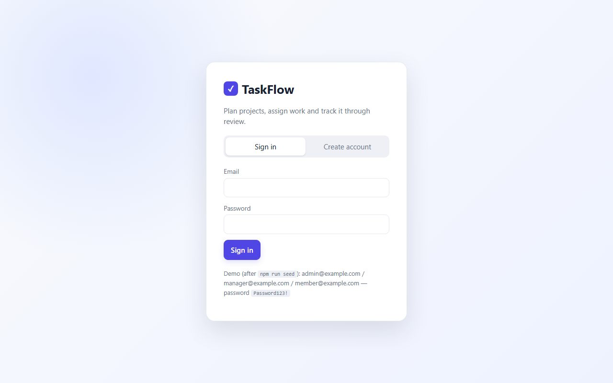
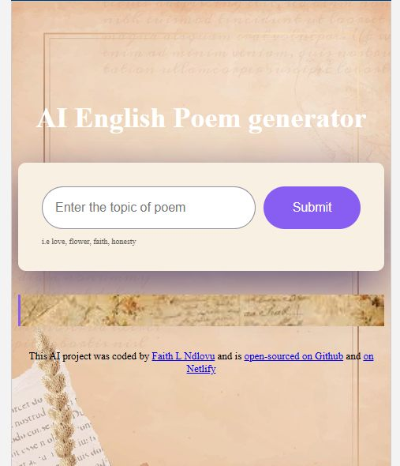
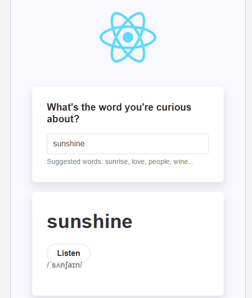
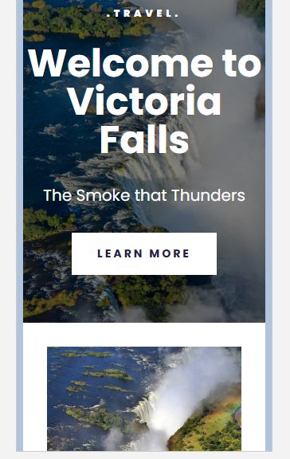

Portfolio
My Projects
Web, mobile, backend and full-stack work — try the live demos, browse the source on GitHub, or read how I designed them.

FaithFlow POS
A point-of-sale and inventory system for running a store: sales, stock, purchase orders, expenses and reporting, with separate access for admins, managers, cashiers and stock controllers.

FAYORA Finance Tracker
A mobile app for managing income, expenses, monthly budgets and savings goals, with separate totals for each currency, including ZiG and pula.

TaskFlow
Task management with admin, manager and member roles, an enforced review workflow, a drag-and-drop Kanban board, an audit trail and automated API tests.

Student Attachment Tracking System
Connects students, companies, supervisors and assessors through applications, placements, location-based check-ins, reports, grading and real-time chat.
E-Learning Platform
A layered REST API with separate student/instructor and admin apps, covering courses, sessions, enrolments and instructor payouts.
Retail Shop Management App
A Flutter mobile app, backed by a REST API, that lets a retail business manage stock, record sales and see daily performance.

AI Poem Generator
Generates creative poems from a user's prompt by calling an AI API, with a clean, responsive interface.

Dictionary App
A React app that fetches real-time meanings, phonetics and examples from a dictionary API as you search.

Victoria Falls Travel
A responsive travel site showcasing Victoria Falls with strong imagery and a mobile-friendly layout.
Hope Hub
A multi-page site for a youth empowerment initiative, with programme information, products, impact stats, enrolment and donations.
No projects in this category yet.
GitHub
Latest on GitHub
Pulled live from my GitHub account — what I've been pushing to most recently.